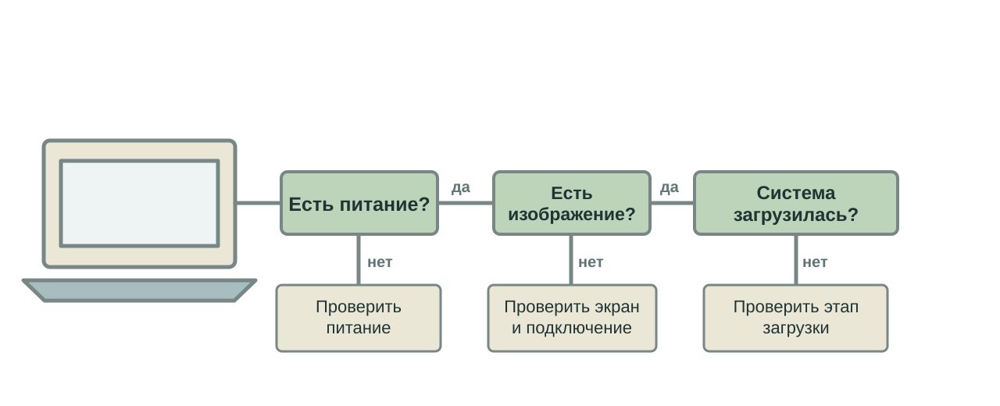
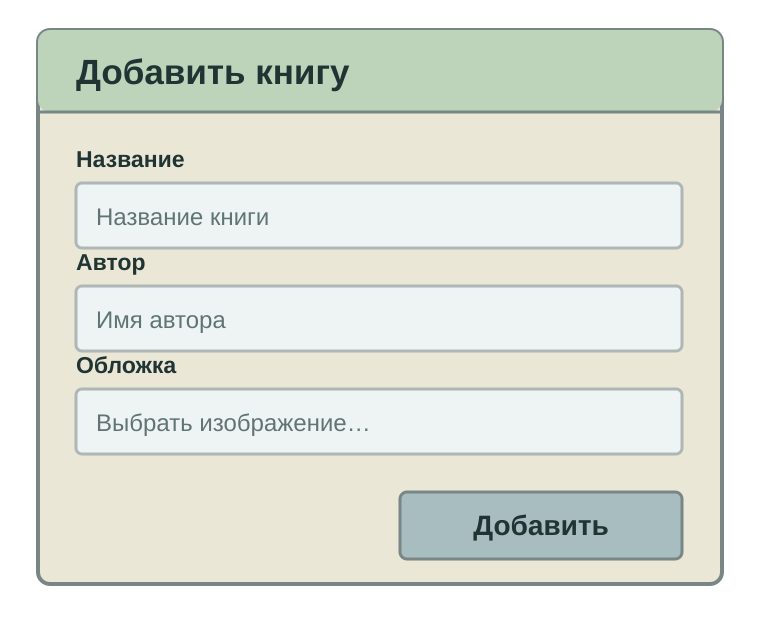

«Компьютер не работает»
Какой вопрос зададите первым?

Какой вопрос зададите первым?

Пользователь заполнил форму и нажал «Добавить».
Что именно произошло?
| Попытка | Обложка | Результат |
|---|---|---|
| А | Не выбрана | Книга добавлена |
| Б | Выбрана | Книга не добавлена |
Остальные поля и исходное состояние каталога одинаковы.
| Без обложки | С обложкой |
|---|---|
| Форма → добавление | Форма → добавление |
| Сохранение книги | Подготовка обложки → ? |
| Книга в каталоге | Сохранение было вызвано? |
Какое наблюдение отличит сбой сохранения от того, что до него не дошли?
Пройдём его дважды: без обложки и с обложкой.
function addBook(book, coverFile) {
if (coverFile) {
book.cover = prepareCover(coverFile);
return;
}
saveBook(book);
showCatalog();
}| Шаг | Без обложки | С обложкой |
|---|---|---|
Условие if | Нет | Да |
| Подготовка обложки | Пропущена | Выполнена |
saveBook(book) | Вызвана | Не вызвана |
return завершил функцию раньше сохранения.| Инструмент | Что хотим узнать |
|---|---|
| Журнал событий | Какие этапы попытки записаны? |
| Отладчик | Куда пошло выполнение после обложки? |
| Статистика | Сбой только у книг с обложкой? |
| История Git | Когда и зачем добавили эту ветку? |
После подготовки обложки выполнение продолжается.
function addBook(book, coverFile) {
if (coverFile) {
book.cover = prepareCover(coverFile);
}
saveBook(book);
showCatalog();
}| Попытка | После исправления |
|---|---|
| Без обложки | Книга по-прежнему добавляется |
| С обложкой | Книга добавляется вместе с обложкой |
Обновить каталог и проверить, что результат сохранился.
Точный симптом → сравнение попыток → первое расхождение
Проверка причины → исправление → повтор обеих попыток
Сначала ищем, где поведение разошлось. Потом меняем код.